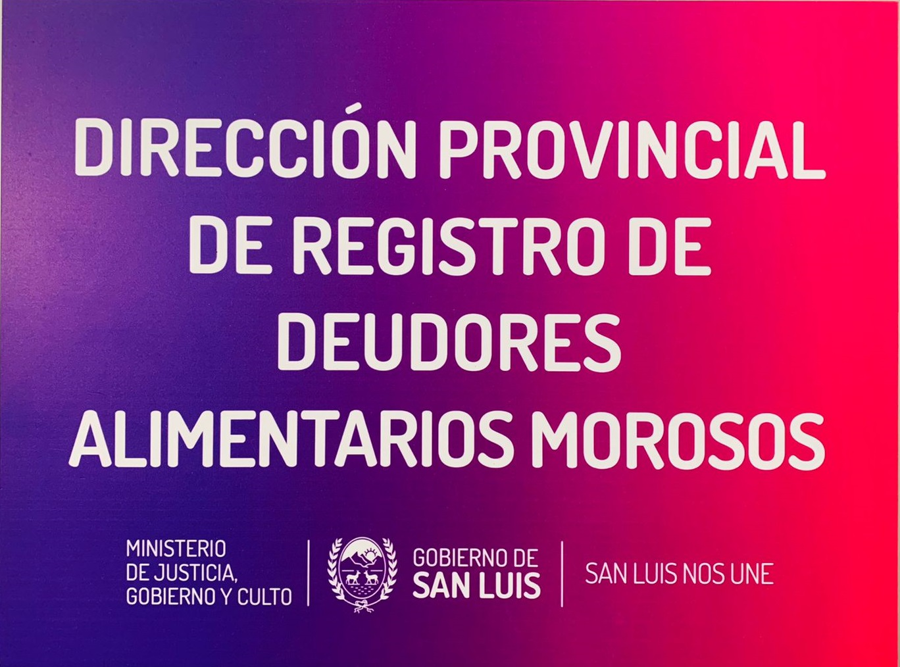

Ministerio de Gobierno Justicia y Culto
Registro de Deudores Alimentarios

Política de Calidad
El registro de Deudores Alimentarios Morosos de la Provinvia de San Luis se compromete a :
- Velar por la Protección de los Derechos del Niño dado que los beneficiados y beneficiadas con el pago de la cuota alimentaria son los niños, adolescnetes y adultos en su propio poder destinatarios de la misma.-
- Poteger a quienes con derecho a reclamar alimentos, no perciben los mismos por el incumplimiento de obliaciones reconocidas judicialmente.-
- Colaborar con el cumplimiento de los requisitos aplicables, el Código Civil y Comercial que establece que la obligación de prestar alimentos comprende la satisfacción de las necesidades de los hijos e hijas de manutención, eduación, esparcimiento, vestimenta, habitación, asistencia, gastos por enfermedad y los gastos necesarios para adquirir una rofesión u oficio.-
- Promover la mejora continúa a traves de la digitalización de sus procesos en pos de brindar un servicio más ágil y eficiente que satisfaga al cliente y las partes interesadas.-